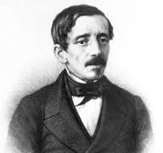
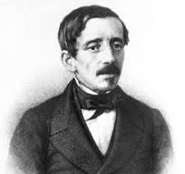
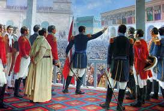

1806 - Nacimiento
Felipe Pardo y Aliaga nació en Lima, Perú, en una época de grandes cambios políticos y sociales.
Felipe Pardo y Aliaga nació en Lima, Perú, en una época de grandes cambios políticos y sociales.
El país ganó su independencia de España, un evento que influenciaría profundamente la obra de Pardo y Aliaga.
Pardo y Aliaga comenzó a publicar sus primeras obras, destacándose por su crítica social y política.
.jpg)
Debido a sus fuertes críticas al gobierno, fue exiliado a Chile, donde continuó su trabajo literario.
.png)
Regresó a Perú y se involucró en la vida política y cultural del país, consolidándose como una figura influyente.
.jpg)
Una de sus obras más conocidas, en la que refleja la realidad social de Perú.
.jpg)
Felipe Pardo y Aliaga falleció en Lima, dejando un legado perdurable en la literatura peruana.
.jpg)
Fue nominado a la Academia Peruana de la Lengua en reconocimiento a sus contribuciones literarias.
.jpg)
Otra obra significativa donde aborda temas educativos y sociales.
.jpg)